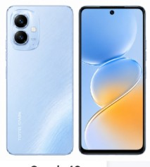

Tecno Spark 40
The Tecno Spark 40 is a stylish budget smartphone offering a smooth 120Hz display,
MediaTek Helio G81 processor, 50MP AI camera and a large 5200mAh battery with
45W fast charging, making it a great choice for daily use. 0
Specifications
- Display: 6.67-inch IPS LCD, 120Hz
- Resolution: 720 × 1600 Pixels
- Processor: MediaTek Helio G81
- RAM: 6GB / 8GB
- Storage: 128GB / 256GB
- Rear Camera: 50MP AI Camera
- Front Camera: 8MP
- Battery: 5200mAh
- Charging: 45W Fast Charging
- Operating System: Android 15 (HiOS 15)
- Network: 4G LTE
- Fingerprint: Side-mounted
- Colors: Ink Black, Titanium Grey, Veil White, Mirage Blue
Key Features
- 120Hz Smooth Display
- 50MP AI Camera
- 45W Fast Charging
- 5200mAh Battery
- Dual Speakers with DTS Sound
- IP64 Dust & Splash Resistance
- Side Fingerprint Sensor
- USB Type-C
Price in Pakistan
PKR 43,999 (Approximate)
← Back to Mobile List